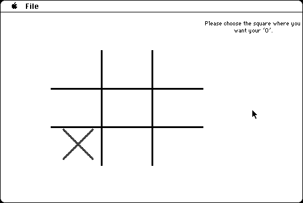

Download
TicTacToe.zip (86K) Tic Tac Toe 2.0 repackaged into a zipped hfs disk image and checksum file. The disk image can be mounted with Mini vMac.
TicTacToe.bin (86K) Tic Tac Toe 2.0 in the original format.
copyright: David Hjelle, "Supervised by Stephen Doering."
mod date: Jun 9, 1997
license: freeware
official url :
The Hjelle Jar ~ Software
An "unbeatable Tic Tac Toe program. There isn't much of a user interface".

If you find these downloads useful, please consider helping the Gryphel Project, which hosts them.
Here are the md5 checksums for the downloads, signed with Gryphel Key 5:
--------- GRY SIGNED TEXT --------- 4e213dc51f13f03dd673e424fa2f4a50 TicTacToe.zip 450aba7bb6cd27932ac454e6670c24dd TicTacToe.bin ------- BEGIN GRY SIGNATURE ------- Gry/4Xa8CFcUzxdN/BYj0NVEUppUf5f6TRW/pwfDV0Svw6+1ArePPY5xCwGMJPt7 dniW+F8HOZYuSzoghkL1uL0GGDLWgSnQzRv0g/dpcNAbeMgGocK3NUEB4ijQ5azn MmVuBz44xQAq3TaHBRYahOL6wxMzC1ONR3l/IjxU2C47R5q+pSIouVdMjuN8lt1v -------- END GRY SIGNATURE --------